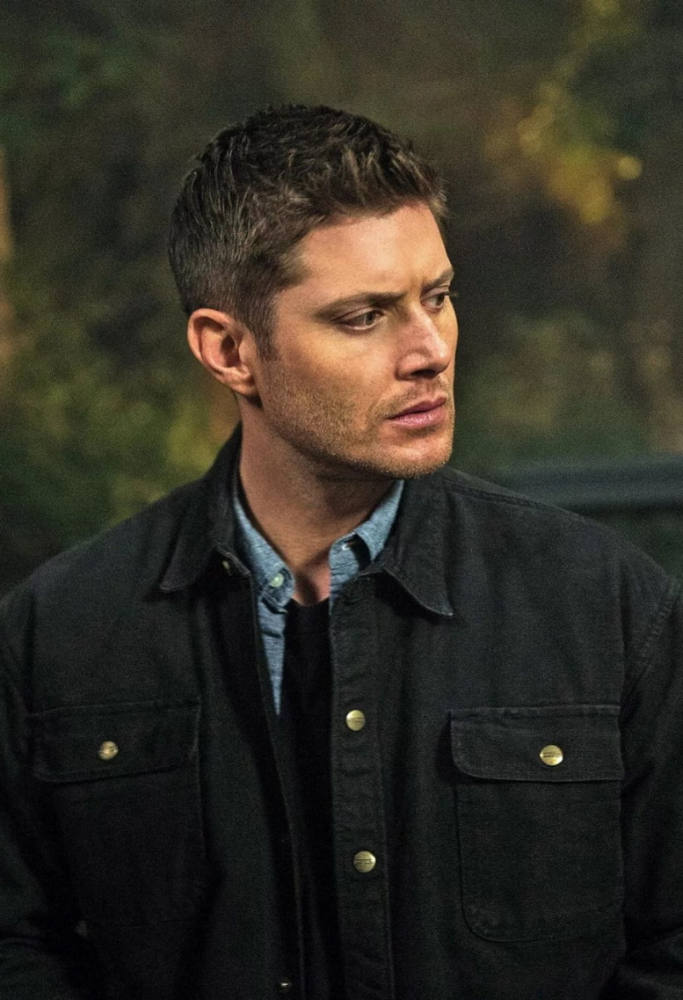
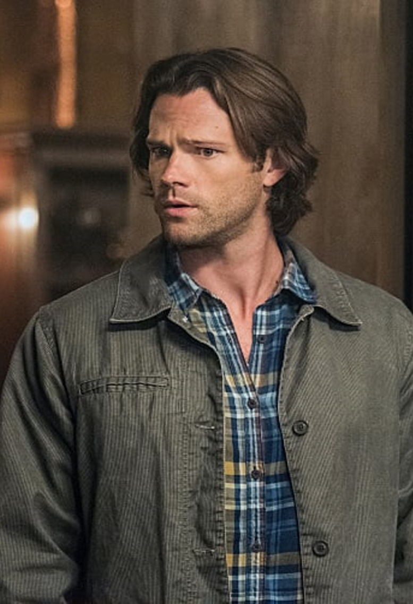

Sam and Dean are the sons of John and Mary Winchester. Mary was killed in a mysterious fire 22 years ago when Sam was just 6 months old. After his wife's death, John began hunting, dedicating his life to finding the thing that had killed her. He raised his sons as "hunters," teaching them everything they would need to know to kill the world's evil things.
Season 1 has the brothers hunting down many monsters based on mythology and urban legends, such as; ghosts, shapeshifters, reapers, demons, vampires, special children, and more.

Dean, the eldest, is more mischievous and funny of the two and prefers hunting over having any kind of normal life. However, in season 7, he did admit to Eliot Ness that he would give it up if he could. He loves life on the road in his '67 Chevy Impala, which John gave to him. Since he is terrified of flying, they drive all across the country hunting everything supernatural. "Saving people, hunting things. The family business."
Dean loves classic rock and the ladies. He can have a crude sense of humor and references pop culture. Even though he avoids emotional intimacy, he has had a few long-term relationships. Being really good with children, Dean proved to be a great step-father to Lisa's son Ben when they lived together for a year after Sam's temporary death.
Dean can be pretty ruthless when he's hunting monsters, but can realize when he has gone too far. Dean will do anything and everything to protect his younger brother Sam, no matter the cost to himself.
Sam always wanted to have a normal life and resented his father for bringing him up as a hunter. He left for university for a while but was pulled back after his girlfriend died the same way as his mother.
Sam would have been happy pursuing a law career and marrying his college sweetheart. He's always wanted to have a normal life. He resented his father for bringing them up as hunters. He was often the outcast in school. Sam had to be dragged back into hunting by his brother Dean to search for their missing father. When his girlfriend died in the same way as his mother, he was back into hunting full force.
Sam is more kind, intelligent, and independent than Dean and is typically the voice of reason. While Sam is a skillful hunter, he is not as enthusiastic about it as his brother. He usually does the research for their hunts because he scored a 174 out of 180 on his LSAT because of his intelligence. Sam is the brain, and Dean is the muscle.
In the first season, Sam begins to have psychic abilities and visions. They eventually find their father, and he tells them that a demon called Azazel (Yellow Eyes) is the one that killed their mother. He had chosen "special children" on their six-month birthday to bleed into their mouths, giving them powers. This made Sam feel more like an outcast, and he feared he would become evil. Even though Sam wants the "normal" life, he keeps hunting to be by his brother's side. He has shown time after time that he would save his brother no matter what.
